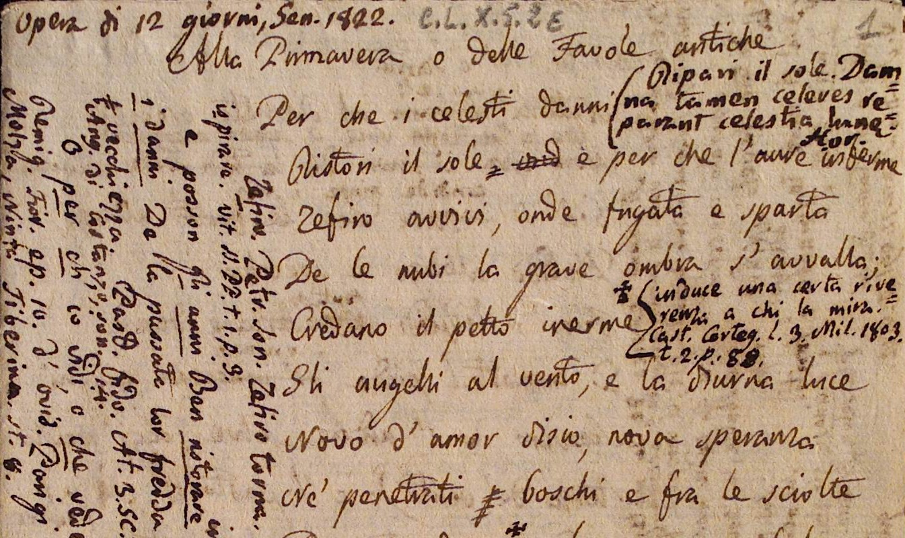
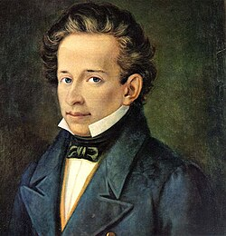
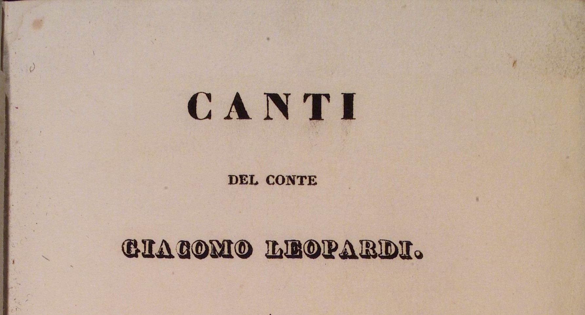
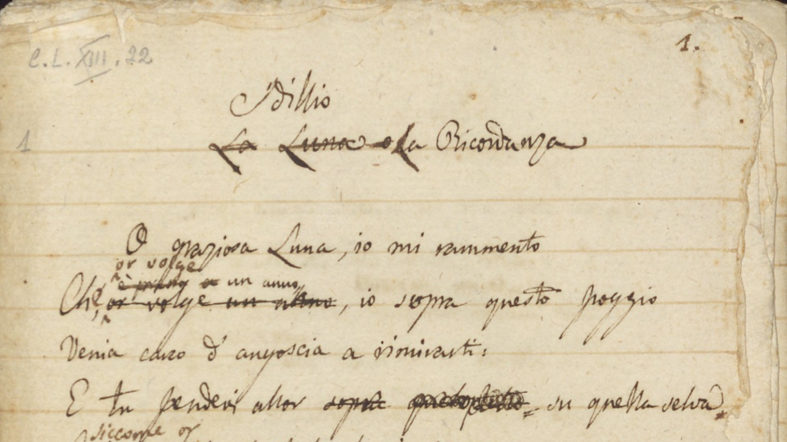
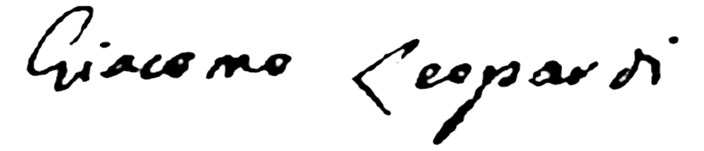
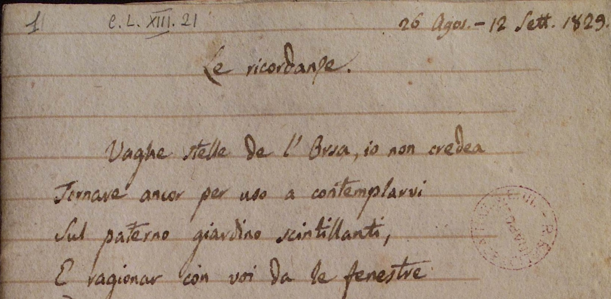
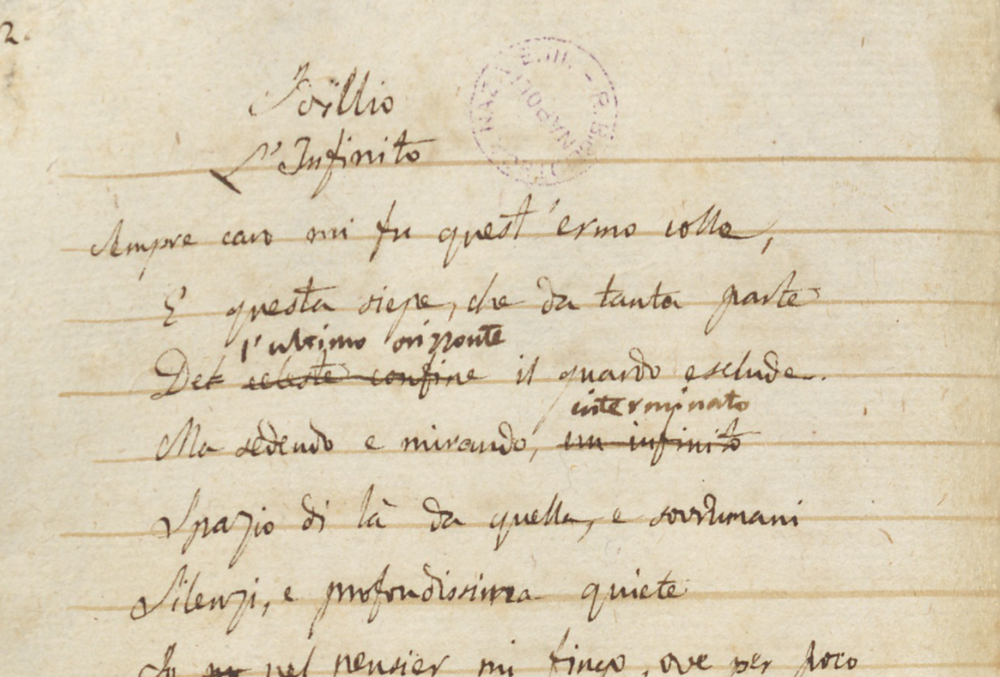
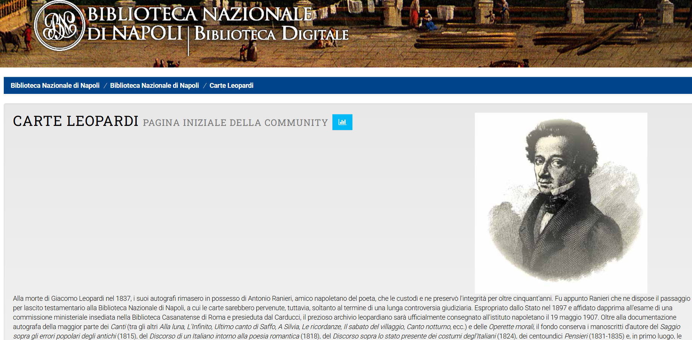

LeoparDig è un progetto nato nell'ambito del corso Digital Humanities e Patrimonio Culturale dell'Università di Bologna. Esso intende fornire un'edizione digitale dei Canti di Giacomo Leopardi, realizzata a partire dall'edizione critica cartacea diretta da Franco Gavazzeni (2006; 2009 II ed.).
Il sito offre, inoltre, una sezione strumenti dove è possibile prendere visione delle carte manoscritte dell'autore, attraverso il link alla Biblioteca Digitale della Biblioteca Nazionale di Napoli (BNN), dove sono attualmente conservate, e ripercorre la nascita e l'evoluzione dei Canti in tutte le sue fasi attraverso una linea del tempo.Continua...

L'edizione riproduce il testo dell'edizione critica diretta da Franco Gavazzeni, pubblicata per l'Accademia della Crusca nel 2006 (2009 II ed.), a cui si rimanda per i criteri di edizione. In linea con l'edizione di riferimento, il testo riporta la lezione di N35c, ovvero l'ultima volontà dell'autore.

La linea del tempo ripercorre le fasi cruciali del formarsi e dell'evoluzione dei Canti, il libro di una vita di Giacomo Leopardi. A partire dalla composizione delle prime canzoni, attraverso le stampe in vita dell'autore, fino all'ultima forma in cui oggi li leggiamo.
Entra nel laboratorio leopardiano! Inesauribile fonte di produzione poetica, gli autografi del poeta sono visionabili grazie alla digitalizzazione offerta dalla Biblioteca Nazionale di Napoli, dove sono attualmente conservati.
